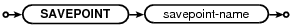
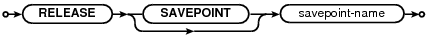
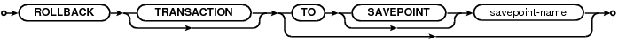

Choose any three.
|
|
SQL As Understood By SQLite
SAVEPOINT
savepoint-stmt:

release-stmt:

rollback-stmt:

SAVEPOINTs are a method of creating transactions, similar to BEGIN and COMMIT, except that the SAVEPOINT and RELEASE commands are named and may be nested.
The SAVEPOINT command starts a new transaction with a name. The transaction names need not be unique. A SAVEPOINT can be started either within or outside of a BEGIN...COMMIT. When a SAVEPOINT is the outer-most savepoint and it is not within a BEGIN...COMMIT then the behavior is the same as BEGIN DEFERRED TRANSACTION.
The ROLLBACK TO command reverts the state of the database back to what it was just after the corresponding SAVEPOINT. Note that unlike that plain ROLLBACK command (without the TO keyword) the ROLLBACK TO command does not cancel the transaction. Instead of cancelling the transaction, the ROLLBACK TO command restarts the transaction again at the beginning. All intervening SAVEPOINTs are cancelled, however.
The RELEASE command is like a COMMIT for a SAVEPOINT. The RELEASE command causes all savepoints back to and including the most recent savepoint with a matching name to be removed from the transaction stack. The RELEASE of an inner transaction does not cause any changes to be written to the database file; it merely removes savepoints from the transaction stack such that it is no longer possible to ROLLBACK TO those savepoints. If a RELEASE command releases the outermost savepoint, so that the transaction stack becomes empty, then RELEASE is the same as COMMIT. The COMMIT command may be used to release all savepoints and commit the transaction even if the transaction was originally started by a SAVEPOINT command instead of a BEGIN command.
If the savepoint-name in a RELEASE command does not match any savepoint currently in the tranaction stack, then no savepoints are released, the database is unchanged, and the RELEASE command returns an error.
Note that an inner transaction might commit (using the RELEASE command) but then later have its work undone by a ROLLBACK in an outer transaction. A power failure or program crash or OS crash will cause the outer-most transaction to rollback, undoing all changes that have occurred within that outer transaction, even changes that have supposedly been "committed" by the RELEASE command. Content is not actually committed on the disk until the outermost transaction commits.
There are several ways of thinking about the RELEASE command:
Some people view RELEASE as the equivalent of COMMIT for a SAVEPOINT. This is an acceptable point of view as long as one remembers that the changes committed by an inner transaction might later be undone by a rollback in an outer transaction.
Another view of RELEASE is that it merges a named transaction into its parent transaction, so that the named transaction and its parent become the same transaction. After RELEASE, the named transaction and its parent will commit or rollback together, whatever their fate may be.
One can also think of savepoints as "marks" in the transaction timeline. In this view, the SAVEPOINT command creates a new mark, the ROLLBACK TO command rewinds the timeline back to a point just after the named mark, and the RELEASE command erases marks from the timeline without actually making any changes to the database.
Transaction Nesting Rules
The last transaction started will be the first transaction committed or rolled back.
The BEGIN command only works if the transaction stack is empty, or in other words if there are no pending transactions. If the transaction stack is not empty when the BEGIN command is invoked, then the command fails with an error.
The COMMIT command commits all outstanding transactions and leaves the transaction stack empty.
The RELEASE command starts with the most recent addition to the transaction stack and releases savepoints backwards in time until it releases a savepoint with a matching savepoint-name. Prior savepoints, even savepoints with matching savepoint-names, are unchanged. If the RELEASE command causes the transaction stack to become empty (if the RELEASE command releases the outermost transaction from the stack) then the transaction commits.
The ROLLBACK command without a TO clause rolls backs all transactions and leaves the transaction stack empty.
The ROLLBACK command with a TO clause rolls back transactions going backwards in time back to the most recent SAVEPOINT with a matching name. The SAVEPOINT with the matching name remains on the transaction stack, but all database changes that occurred after that SAVEPOINT was created are rolled back. If the savepoint-name in a ROLLBACK TO command does not match any SAVEPOINT on the stack, then the ROLLBACK command fails with an error and leaves the state of the database unchanged.